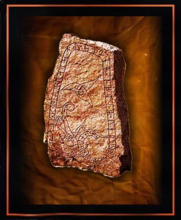
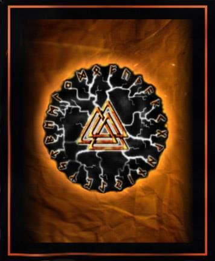
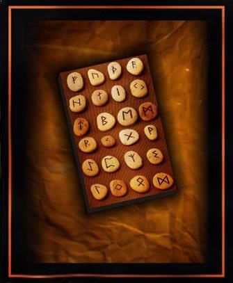
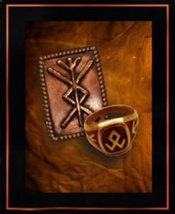
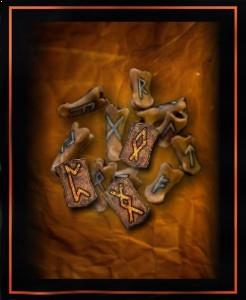
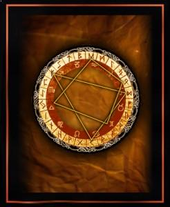
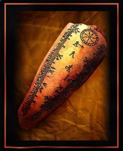
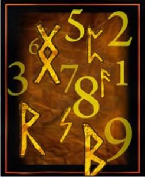

–ß–¢–û –¢–ê–ö–û–ï –†–£–ù–´. –°–ö–ê–ù–î–ò–ù–ê–í–°–ö–ò–ï –†–£–ù–´.
–ß—Ç–æ –∂–µ —Ç–∞–∫–æ–µ —Ä—É–Ω—ã, –∫–∞–∫–∞—è —Ç–∞–π–Ω–∞ —Å–∫—Ä—ã—Ç–∞ –≤ —ç—Ç–æ–º –ø—Ä–æ—Å—Ç–æ–º —Å–ª–æ–≤–µ? –ò–∑–Ω–∞—á–∞–ª—å–Ω–æ —Å–ª–æ–≤–æ runa –≤ –±—É–∫–≤–∞–ª—å–Ω–æ–º —Å–º—ã—Å–ª–µ –æ–∑–Ω–∞—á–∞–µ—Ç ‚Äú—Å–µ–∫—Ä–µ—Ç,—Ç–∞–π–Ω–∞‚Äù, –≤ –ø—Ä–æ–∏—Å—Ö–æ–∂–¥–µ–Ω–∏–∏ –æ—Ç –¥—Ä–µ–≤–Ω–µ–≥–æ –∫–æ—Ä–Ω—è –Ω–∞—Ä–µ—á–∏–π –Ω–æ—Ä–¥–∏—á–µ—Å–∫–∏—Ö –ø–ª–µ–º–µ–Ω —Å–æ –∑–Ω–∞—á–µ–Ω–∏–µ–º ‚Äú—Å–ø—Ä—è—Ç–∞—Ç—å, —Å–∫—Ä—ã—Ç—å‚Äù. –ü–æ –º–Ω–µ–Ω–∏—é –ª–∏–Ω–≥–≤–∏—Å—Ç–æ–≤, —Å–ª–µ–¥—ã —ç—Ç–æ–≥–æ –¥—Ä–µ–≤–Ω–µ–π—à–µ–≥–æ –∫–æ—Ä–Ω—è —Å–æ—Ö—Ä–∞–Ω–∏–ª–∏—Å—å –∏ –≤ —Å–æ–≤—Ä–µ–º–µ–Ω–Ω—ã—Ö —è–∑—ã–∫–∞—Ö –º–Ω–æ–≥–∏—Ö –Ω–∞—Ä–æ–¥–æ–≤; –Ω–µ–º–µ—Ü–∫–∏–π –≥–ª–∞–≥–æ–ª ‚ÄúRAUNEN‚Äù ‚Äì ‚Äú–Ω–∞—à–µ–ø—Ç—ã–≤–∞—Ç—å‚Äù, –ª–∞—Ç—ã—à—Å–∫–æ–µ ‚ÄúRUNAT‚Äù ‚Äì ‚Äú—Ä–∞–∑–≥–æ–≤–∞—Ä–∏–≤–∞—Ç—å‚Äù –∏–ª–∏ —Ñ–∏–Ω—Å–∫–æ–µ —Å–ª–æ–≤–æ ‚ÄúRUNO‚Äù ‚Äì ‚Äú–∑–∞–∫–ª–∏–Ω–∞–Ω–∏–µ‚Äù, —Ä—É—Å—Å–∫–∏–µ –≥–ª–∞–≥–æ–ª—ã ‚Äú—Å–æ—Ö—Ä–∞–Ω—è—Ç—å, —Ö—Ä–∞–Ω–∏—Ç—å‚Äù —Ç–æ–∂–µ, –≤–µ—Ä–æ—è—Ç–Ω–æ, —Å–≤—è–∑–∞–Ω—ã —Å —ç—Ç–º–∏ –¥—Ä–µ–≤–Ω–µ–π—à–∏–º –∫–æ—Ä–Ω–µ–º. –î–∞–∂–µ —Å—Ä–µ–¥–∏ —Å–∞–º—ã—Ö —Å–∞–º—ã—Ö –ø–µ—Ä–≤—ã—Ö —Å–∏–º–≤–æ–ª–æ–≤, –≤—ã—Ä–µ–∑–∞–Ω–Ω—ã—Ö –≤ –∫–∞–º–Ω–µ —Ä—É–∫–∞–º–∏ –ø–µ—Ä–≤—ã—Ö –ª—é–¥–µ–π, –º–æ–∂–Ω–æ —Ä–∞–∑–≥–ª—è–¥–µ—Ç—å —á–µ—Ä—Ç—ã –±—É–¥—É—â–∏—Ö —Ä—É–Ω. –†—É–Ω—ã –ø—Ä–µ–ø–æ–ª–∞–≥–∞—é—Ç —Ä–∞–±–æ—Ç—É —Å —Ç–≤–µ—Ä–¥–æ–π –ø–æ–≤–µ—Ä—Ö–Ω–æ—Å—Ç—å—é –∏ —Å–æ–æ—Ç–≤–µ—Ç—Å—Ç–≤–µ–Ω–Ω–æ —Å –æ—Å—Ç—Ä—ã–º –∏–Ω—Å—Ç—Ä—É–º–µ–Ω—Ç–æ–º –¥–ª—è –∏—Ö –Ω–∞–Ω–µ—Å–µ–Ω–∏—è – –≤—ã—Ä–µ–∑–∞–Ω–∏—è, –≤—ã—Å–µ—á–µ–Ω–∏—è – —Ç—è–∂–µ–ª–æ –ø—Ä–µ–¥—Å—Ç–∞–≤–∏—Ç—å —Å–µ–±–µ –∂–∏—Ç–µ–ª—è –ø—É—Å—Ç—ã–Ω–∏, –≤—ã–≤–æ–¥—è—â–∏–º —Ä—É–Ω—ã –Ω–∞ –ø–µ—Å–∫–µ –ø–∞–ª—å—Ü–µ–º…
–ü–†–û–ò–°–•–û–ñ–î–ï–ù–ò–ï –†–£–ù

–ò—Ç–∞–∫, –Ω–µ–º–Ω–æ–≥–æ –æ –ø—Ä–æ–∏—Å—Ö–æ–∂–¥–µ–Ω–∏–∏ —Ä—É–Ω. –ü—Ä–æ–∏—Å—Ö–æ–∂–¥–µ–Ω–∏–µ —Ä—É–Ω –ø–æ–∫—Ä—ã—Ç–æ —Ç–∞–π–Ω–æ–π, –æ –ø—Ä–æ–∏—Å—Ö–æ–∂–¥–µ–Ω–∏–∏ —Ä—É–Ω —Å—É—â–µ—Å—Ç–≤—É–µ—Ç –Ω–µ–º–∞–ª–æ –ª–µ–≥–µ–Ω–¥. –° —Ç–µ—Ö –ø–æ—Ä —ç—Ç–∏ —Å–æ–∫—Ä–æ–≤–µ–Ω–Ω—ã–µ —Å–ª–æ–≤–∞ —ç—Ö–æ–º —Ç–∞–π–Ω–æ–≥–æ –∑–Ω–∞–Ω–∏—è –ø—Ä–æ–Ω–µ—Å–ª–∏—Å—å —Å–∫–≤–æ–∑—å –≤—Å–µ –≤—Ä–µ–º–µ–Ω–∞ –∏ —ç–ø–æ—Ö–∏. –ö —Å–æ–∂–∞–ª–µ–Ω–∏—é, –Ω–µ—É–º–æ–ª–∏–º–æ–µ —Ç–µ—á–µ–Ω–∏–µ –≤—Ä–µ–º–µ–Ω–∏ ,–º–Ω–æ–≥–æ—á–∏—Å–ª–µ–Ω–Ω—ã–µ –≤–æ–π–Ω—ã –∏ –¥—Ä—É–≥–∏–µ —Å–æ–±—ã—Ç–∏—è –±—É—Ä–Ω–æ–π –∏—Å—Ç–æ—Ä–∏–∏ —Å—Ä–µ–¥–Ω–µ–≤–µ–∫–æ–≤–æ–π –ï–≤—Ä–æ–ø—ã ,—Å–¥–µ–ª–∞–ª–∏ —Å–≤–æ–µ –¥–µ–ª–æ. –ü–∞–º—è—Ç–Ω–∏–∫–∏ —Ä—É–Ω–Ω–æ–≥–æ –ø–∏—Å—å–º–∞, –¥–æ—à–µ–¥—à–∏–µ –¥–æ –Ω–∞—à–∏—Ö –≤—Ä–µ–º–µ–Ω –Ω–µ–º–Ω–æ–≥–æ—á–∏—Å–ª–µ–Ω–Ω—ã, –æ–¥–Ω–∞–∫–æ –∏ –ø–æ —ç—Ç–∏–º –Ω–µ–º–Ω–æ–≥–∏–º –æ—Å–∫–æ–ª–∫–∞–º –¥—Ä–µ–≤–Ω–µ–π—à–µ–π –∫—É–ª—å—Ç—É—Ä—ã –Ω–∞—à–∏—Ö –Ω–æ—Ä–¥–∏—á–µ—Å–∫–∏—Ö –ø—Ä–µ–¥–∫–æ–≤ –º–æ–∂–Ω–æ —Å—É–¥–∏—Ç—å –æ –≤–µ–ª–∏—á–∏–∏ –∏ —Å–∏–ª–µ —Ç–∞–π–Ω–æ–≥–æ –∑–Ω–∞–Ω–∏—è —Ä—É–Ω–∏—á–µ—Å–∫–æ–π –∫—É–ª—å—Ç—É—Ä—ã.–ü–†–û–ò–°–•–û–ñ–î–ï–ù–ò–ï –†–£–ù. –ø–æ–¥—Ä–æ–±–Ω–µ–µ
–†–£–ù–ù–ê–Ø –ú–ê–ì–ò–Ø

–ö–æ—Å–Ω–µ–º—Å—è —Ç–µ–º—ã —Ä—É–Ω–Ω–æ–π –º–∞–≥–∏–∏–ë—ã–ª–æ –±—ã –±–æ–ª—å—à–∏–º –∑–∞–±–ª—É–∂–¥–µ–Ω–∏–µ–º —Ä–∞—Å—Å–º–∞—Ç—Ä–∏–≤–∞—Ç—å —Å–∏—Å—Ç–µ–º—É —Ä—É–Ω–∏—á–µ—Å–∫–∏—Ö —Å–∏–º–≤–æ–ª–æ–≤ –∫–∞–∫ –ø—Ä–æ—Å—Ç—É—é –∞–ª—Ñ–∞–≤–∏—Ç–Ω—É—é —Å–∏—Å—Ç–µ–º—É, —Ö–æ—Ç—è –æ—á–µ–Ω—å –º–Ω–æ–≥–∏–µ –≤–Ω–µ—à–Ω–∏–µ –ø—Ä–∏–∑–Ω–∞–∫–∏ –Ω–∞—á–µ—Ä—Ç–∞–Ω–∏—è —Ä—É–Ω –≥–æ–≤–æ—Ä—è—Ç –∏–º–µ–Ω–Ω–æ –æ–± —ç—Ç–æ–º. –õ—é–¥—è–º , –∫–æ—Ç–æ—Ä—ã–º –Ω–µ–±–µ–∑—Ä–∞–∑–ª–∏—á–Ω–æ –Ω–∞—á–∞–ª–æ –±–æ–ª–µ–µ —Ç–æ–Ω–∫–æ–µ , —Å–æ–∫—Ä–æ–≤–µ–Ω–Ω–æ–µ – —Ç–æ–ª–∫–æ–≤–∞–Ω–∏–µ —Ä—É–Ω –ø—Ä–µ–¥—Å—Ç–∞–≤—è—Ç—Å—è —Å–∫–æ—Ä–µ–µ –∫–∞–∫ —Å–∏—Å—Ç–µ–º–∞ —Ç–∞–π–Ω—ã—Ö –∏–∑–æ—Ç–µ—Ä–∏—á–µ—Å–∫–∏—Ö —Å–∏–º–≤–æ–ª–æ–≤. –õ–µ–≥–µ–Ω–¥—ã –Ω–∞—à–∏—Ö –Ω–æ—Ä–¥–∏—á–µ—Å–∫–∏—Ö –ø—Ä–µ–¥–∫–æ–≤ –≥–æ–≤–æ—Ä—è—Ç –æ —Å–≤—è—â–µ–Ω–Ω–æ–º –ø—Ä–æ–∏—Å—Ö–æ–∂–¥–µ–Ω–∏–∏ –≤—Å–µ—Ö –¥–≤–∞–¥—Ü–∞—Ç–∏ –ø—è—Ç–∏ —Ä—É–Ω . –í —Å–æ–≤–æ–∫—É–ø–Ω–æ—Å—Ç–∏ –≤—Å–µ –¥–≤–∞–¥—Ü–∞—Ç—å –ø—è—Ç—å —Ä—É–Ω , –ø—Ä–∏—É–º–Ω–æ–∂–∏–≤ —Å–æ–≤–æ–∫—É–ø–Ω–æ —Å–≤–æ—é –º–∞–≥–∏—á–µ—Å–∫—É—é —Å–∏–ª—É , –≤–æ–∑–º–æ–∂–Ω–æ—Å—Ç–∏ –∏ —Å–≤—è–∑–∏, –æ–±—ä–µ–¥–∏–Ω—è—é—Ç—Å—è –≤ –¥–µ–π—Å—Ç–≤—É—é—â—É—é —Å–∏—Å—Ç–µ–º—É –º–∞–≥–∏—á–µ—Å–∫–∏—Ö —Å–∏–º–≤–æ–ª–æ–≤….
–†–£–ù–ù–ê–Ø –ú–ê–ì–ò–Ø.–ø–æ–¥—Ä–æ–±–Ω–µ–µ
–ì–ê–î–ê–ù–ò–ï –ù–ê –†–£–ù–ê–•

–ò —Å–∞–º–æ–µ –≥–ª–∞–≤–Ω–æ–µ ,–Ω–µ—Å–æ–º–Ω–µ–Ω–Ω–æ – –≥–∞–¥–∞–Ω–∏–µ –Ω–∞ —Ä—É–Ω–∞—Ö. –ö–∞–∫ —É–∂–µ –±—ã–ª–æ –æ–ø–∏—Å–∞–Ω–æ –Ω–∞ –ø—Ä–µ–¥—ã–¥—É—â–∏—Ö —Å—Ç—Ä–∞–Ω–∏—Ü–∞—Ö, –ø—Ä–∏ –ø–æ–º–æ—â–∏ —Ä—É–Ω –º–æ–∂–Ω–æ –ø—Ä–µ–¥—Å–∫–∞–∑—ã–≤–∞—Ç—å —Å–æ–±—ã—Ç–∏—è –±—É–¥—É—â–µ–≥–æ , –ø—Ä–µ–¥—É–≥–∞–¥—ã–≤–∞—Ç—å –∏ –∏–Ω—Ç–µ—Ä–ø—Ä–µ—Ç–∏—Ä–æ–≤–∞—Ç—å –µ–≥–æ –≤–æ–∑–º–æ–∂–Ω—ã–µ –≤–∞—Ä–∏–∞–Ω—Ç—ã. –ì–∞–¥–∞–Ω–∏–µ –Ω–∞ —Ä—É–Ω–∞—Ö ‚Äì –ø—Ä–µ–∏—Å–ø–æ–ª–Ω–µ–Ω–Ω—ã–π –ª–æ–≥–∏–∫–∏ , –ª–∏—à–µ–Ω–Ω—ã–π –¥–≤—É—Å–º—ã—Å–ª–µ–Ω–Ω–æ—Å—Ç–∏ —Ç–æ—á–Ω—ã–π –ø—Ä–æ–≥–Ω–æ–∑ —Å–æ–±—ã—Ç–∏–π –∏ –∞–Ω–∞–ª–∏–∑ —Å–≤–µ—Ä—à–µ–Ω–Ω—ã—Ö –í–∞–º–∏ –ø–æ—Å—Ç—É–ø–∫–æ–≤. –ì–∞–¥–∞–Ω–∏–µ –Ω–∞ —Ä—É–Ω–∞—Ö ‚Äì –Ω–µ–∑—Ä–∏–º—ã–µ –ø–æ–¥—Å–∫–∞–∑–∫–∏ –∏ –Ω–∞–º–µ–∫–∏, –ø–æ–∂–µ–ª–∞–Ω–∏—è –¥–ª—è –æ—Å–º—ã—Å–ª–µ–Ω–∏—è –∏ —É–ª—É—á—à–µ–Ω–∏—è –í–∞–º–∏ —Å–ª–æ–∂–∏–≤—à–µ–π—Å—è —Å–∏—Ç—É–∞—Ü–∏–∏. –ö–∞–∫ –≥–∞–¥–∞—Ç—å –Ω–∞ —Ä—É–Ω–∞—Ö ‚Äì —á–∞—Å—Ç–æ –º–æ–∂–Ω–æ —É—Å–ª—ã—à–∞—Ç—å –ø–æ–¥–æ–±–Ω—ã–π –≤–æ–ø—Ä–æ—Å. –î–ª—è —Å–æ–≤–µ—Ä—à–µ–Ω–∏—è –ø—Ä–µ–¥—Å–∫–∞–∑–∞–Ω–∏–π –Ω–µ–æ–±—Ö–æ–¥–∏–º–æ –ø–æ–¥–≥–æ—Ç–æ–≤–∏—Ç—å –Ω–∞–±–æ—Ä —Ä—É–Ω –∏–∑ –¥–≤–∞–¥—Ü–∞—Ç–∏ –ø—è—Ç–∏ –∑–Ω–∞–∫–æ–≤….
–ì–ê–î–ê–ù–ò–ï –ù–ê –†–£–ù–ê–•.–ø–æ–¥—Ä–æ–±–Ω–µ–µ
–†–£–ù–ò–ß–ï–°–ö–ò–ï –ê–ú–£–õ–ï–¢–´

–†—É–Ω–∏—á–µ—Å–∫–∏–µ –∏–ª–∏ —Ä—É–Ω–Ω—ã–µ –∞–º—É–ª–µ—Ç—ã ‚Äì —É–¥–∏–≤–∏—Ç–µ–ª—å–Ω–æ –ø—Ä–æ—Å—Ç—ã–µ –∏ –æ–¥–Ω–æ–≤—Ä–µ–º–µ–Ω–Ω–æ –º–æ—â–Ω—ã–µ –æ–±–µ—Ä–µ–≥–∏ –∏ —Ç–∞–ª–∏—Å–º–∞–Ω—ã, –≤–Ω—É—Ç—Ä–µ–Ω–Ω—è—è —Å–∏–ª–∞ –∫–æ—Ç–æ—Ä—ã—Ö –æ—Å–Ω–æ–≤–∞–Ω–∞ –Ω–∞ –∏—Å–ø–æ–ª—å–∑–æ–≤–∞–Ω–∏–∏ –º–∞–≥–∏–∏ –æ–¥–∏–Ω–æ—á–Ω—ã—Ö —Ä—É–Ω –∏ —Ä—É–Ω–∏—á–µ—Å–∫–∏—Ö —Å–æ—á–µ—Ç–∞–Ω–∏–π . –û–Ω–∏ –Ω–µ—Å–æ–º–Ω–µ–Ω–Ω–æ, –º–æ–≥—É—Ç –æ–∫–∞–∑–∞—Ç—å –ø–æ–∑–∏—Ç–∏–≤–Ω–æ–µ –≤–æ–∑–¥–µ–π—Å—Ç–≤–∏–µ –Ω–∞ —Å–≤–æ–µ–≥–æ –≤–ª–∞–¥–µ–ª—å—Ü–∞ –∏ –ø–æ–≤–ª–∏—è—Ç—å –Ω–∞ –µ–≥–æ –æ–∫—Ä—É–∂–µ–Ω–∏–µ, –æ–∫–∞–∑—ã–≤–∞—è –∑–∞—â–∏—Ç–Ω–æ–µ –∏–ª–∏ –∫–æ—Ä—Ä–µ–∫—Ç–∏—Ä—É—é—â–µ–µ –≤–æ–∑–¥–µ–π—Å—Ç–≤–∏–µ. –†—É–Ω–∏—á–µ—Å–∫–∏–µ –∞–º—É–ª–µ—Ç—ã —è–≤–ª—è—é—Ç—Å—è, –ø—Ä–∏ –ø—Ä–∞–≤–∏–ª—å–Ω–æ–º –∏–∑–≥–æ—Ç–æ–≤–ª–µ–Ω–∏–∏ –∏ –∏—Å–ø–æ–ª—å–∑–æ–≤–∞–Ω–∏–∏, –Ω–æ—Å–∏—Ç–µ–ª—è–º–∏ –¥—Ä–µ–≤–Ω–µ–π –∏ –ø—Ä–æ—Å—Ç–æ–π –≤–Ω—É—Ç—Ä–µ–Ω–Ω–µ–π —ç–Ω–µ—Ä–≥–µ—Ç–∏–∫–∏, —Å–ø–æ—Å–æ–±–Ω–æ–π –ø–æ–≤–ª–∏—è—Ç—å –Ω–∞ —Å—É–¥—å–±—É —Å–≤–æ–µ–≥–æ –æ–±–ª–∞–¥–∞—Ç–µ–ª—è. …..–†–£–ù–ò–ß–ï–°–ö–ò–ï –ê–ú–£–õ–ï–¢–´.–ø–æ–¥—Ä–æ–±–Ω–µ–µ
–ò–ó–ì–û–¢–û–í–õ–ï–ù–ò–ï –†–£–ù

–ò–∑–≥–æ—Ç–æ–≤–ª–µ–Ω–∏–µ –Ω–∞–±–æ—Ä–∞ —Ä—É–Ω –¥–ª—è –≥–∞–¥–∞–Ω–∏—è —è–≤–ª—è–µ—Ç—Å—è –æ—á–µ–Ω—å –æ—Ç–≤–µ—Ç—Å—Ç–≤–µ–Ω–Ω—ã–º –∏ –æ–¥–Ω–æ–∑–Ω–∞—á–Ω–æ –≥–ª—É–±–æ–∫–æ —Å–∞–º–æ—Å—Ç–æ—è—Ç–µ–ª—å–Ω—ã–º –¥–µ–ª–æ–º. –í–µ–¥—å –ø—Ä–∏—Å—Ç—É–ø–∞—è –∫ –∏–∑–≥–æ—Ç–æ–≤–ª–µ–Ω–∏—é —Ä—É–Ω —Å–æ–±—Å—Ç–∞–µ–Ω–Ω–æ—Ä—É—á–Ω–æ, –≤—ã –Ω–∞–ø—Ä–∞–≤–ª—è–µ—Ç–µ –Ω–∞ –Ω–µ–≥–æ —Å–æ–±—Å—Ç–≤–µ–Ω–Ω—É—é –≤–Ω—É—Ç—Ä–µ–Ω–Ω–µ—é —ç–Ω–µ—Ä–≥–∏—é. –¢–∞–∫–∂–µ –∫–∞–∫ –∏ –¥–ª—è —Ä—É–Ω–∏—á–µ—Å–∫–∏—Ö –∞–º—É–ª–µ—Ç–æ–≤, –ø–æ–¥—Ö–æ–¥—è—â–∏–º –º–∞—Ç–µ—Ä–∏–∞–ª–æ–º –¥–ª—è –∏–∑–≥–æ—Ç–æ–≤–ª–µ–Ω–∏ —Ä—É–Ω –º–æ–≥—É—Ç —Å–ª—É–∂–∏—Ç—å —Ç–æ–ª—å–∫–æ –µ—Å—Ç–µ—Å—Ç–≤–µ–Ω–Ω—ã–µ –ø—Ä–∏—Ä–æ–¥–Ω—ã–µ –º–∞—Ç–µ—Ä–∏–∞–ª—ã. –°–∞–º—ã–º–∏ –ø–æ–ø—É–ª—è—Ä–Ω—ã–º–∏ –¥–ª—è –∏–∑–≥–æ—Ç–≤–ª–µ–Ω–∏—è —Ä—É–Ω —è–≤–ª—è—é—Ç—Å—è –∑–∞–≥–æ—Ç–æ–≤–∫–∏ –∏–∑ –∂–∏–≤–æ–≥–æ –¥–µ—Ä–µ–≤–∞, –∫–∞–º–Ω—è, –∫–æ—Å—Ç–∏, –≥–ª–∏–Ω—ã, —Ç–æ–ª—Å—Ç–æ–π –∫–æ–∂–∏. –í–æ–ø—Ä–æ—Å –ø–æ–¥–±–æ—Ä–∞ –º–∞—Ç–µ—Ä–∏–∞–ª–∞ – –Ω–∞–∏–±–æ–ª–µ–µ –≤–∞–∂–Ω—ã–π –≤ –ø—Ä–æ—Ü–µ—Å—Å–µ –∏–∑–≥–æ—Ç–æ–≤–ª–µ–Ω–∏—è –Ω–∞–±–æ—Ä–∞ —Ä—É–Ω….–ò–ó–ì–û–¢–û–í–õ–ï–ù–ò–ï –†–£–ù.–ø–æ–¥—Ä–æ–±–Ω–µ–µ
–†–£–ù–ò–ß–ï–°–ö–ò–ô –ì–û–†–û–°–ö–û–ü

–†—É–Ω—ã – —ç—Ç–æ –¥—Ä–µ–≤–Ω—è—è –Ω–æ—Ä–¥–∏—á–µ—Å–∫–∞—è —Å–∏—Å—Ç–µ–º–∞ –ø–∏–∫—Ç–æ–≥—Ä–∞—Ñ–∏—á–µ—Å–∫–∏—Ö —Å–∏–º–≤–æ–ª–æ–≤, —Å–≤–æ–∏–º–∏ –º–∞–≥–∏—á–µ—Å–∫–∏–º–∏ —Å–≤–æ–π—Å—Ç–≤–∞–º–∏ —Å–≤—è–∑–∞–Ω–Ω–∞—è —Å –æ—Å–Ω–æ–≤–Ω—ã–º–∏ —Å–∏–ª–∞–º–∏ –ö–æ—Å–º–æ—Å–∞. –í —Ä—É–Ω–∏—á–µ—Å–∫–æ–π –∞—Å—Ç—Ä–æ–ª–æ–≥–∏–∏ –Ω–∞—á–∞–ª–æ–º –≥–æ–¥–∞ –ø—Ä–∏–Ω—è—Ç–æ —Å—á–∏—Ç–∞—Ç—å –¥–µ–Ω—å –≤–µ—Å–µ–Ω–Ω–µ–≥–æ —Ä–∞–≤–Ω–æ–¥–µ–Ω—Å—Ç–≤–∏—è, –∫–æ–≥–¥–∞ –°–æ–ª–Ω—Ü–µ –ø–µ—Ä–µ–º–µ—â–∞–µ—Ç—Å—è –≤ –Ω—É–ª–µ–≤–æ–π –≥—Ä–∞–¥—É—Å –û–≤–Ω–∞, —Ç–æ –µ—Å—Ç—å 21 –∞–ø—Ä–µ–ª—è –∏–ª–∏ 22 –∞–ø—Ä–µ–ª—è. –≠—Ç–æ—Ç –¥–µ–Ω—å –ø—Ä–∏–Ω–∏–º–∞–µ—Ç—Å—è –∑–∞ —Ç–æ—á–∫—É –æ—Ç—Å—á—ë—Ç–∞ – –Ω–∞—á–∞–ª–æ –≥–æ–¥–æ–≤–æ–≥–æ —Ü–∏–∫–ª–∞. –î–≤–∞–¥—Ü–∞—Ç—å —á–µ—Ç—ã—Ä–µ –†—É–Ω—ã –°—Ç–∞—Ä—à–µ–≥–æ –§—É—Ç–∞—Ä–∫–∞ –¥–µ–ª—è—Ç –∑–æ–¥–∏–∞–∫–∞–ª—å–Ω—ã–µ –∑–Ω–∞–∫–∏ –ø–æ–ø–æ–ª–∞–º, –ø—Ä–µ–≤—Ä–∞—â–∞—è –∏—Ö –≤ 24 —Ä—É–Ω–∏—á–µ—Å–∫–∏—Ö –¥–µ–∫–∞–Ω–∞. –°–æ–æ—Ç–≤–µ—Ç—Å—Ç–≤–µ–Ω–Ω–æ, –∫ –≤–ª–∏—è–Ω–∏—é –∑–Ω–∞–∫–∞ –ó–æ–¥–∏–∞–∫–∞, –±—É–¥–µ—Ç –ø—Ä–∏–±–∞–≤–ª—è—Ç—å—Å—è –≤–ª–∏—è–Ω–∏–µ –≤–µ–¥—É—â–µ–π —Ä—É–Ω—ã —á–µ–ª–æ–≤–µ–∫–∞.–†–£–ù–ò–ß–ï–°–ö–ò–ô –ì–û–†–û–°–ö–û–ü.–ø–æ–¥—Ä–æ–±–Ω–µ–µ
–†–£–ù–ò–ß–ï–°–ö–ò–ô –ö–ê–õ–ï–ù–î–ê–†–¨

Рунические календари – это календари, в которых отрезки временных циклов обозначаются рунами. В рунической традиции точная дата того или иного события совсем не обязательно имела точную астрономическую привязку, вычисленнную тем или иным способом . Рунический календарь зачастую имел привязку к периодам обычного естественного цикла природных событий или явлений. Отмечаемые праздники и памятные даты тоже привязывались к этим природным pеалиям. Именно исходя из этих причин, в различных областях северного рунического мира праздники отмечали в различное время. Отсюда же становиться очевидно, что общего рунного календаря , наверное, в природе не существовало.РУНИЧЕСКИЙ КАЛЕНДАРЬ.подробнее
–†–£–ù–ò–ß–ï–°–ö–ê–Ø –ù–£–ú–ï–†–û–õ–û–ì–ò–Ø

–ú–µ—Ç–æ–¥–æ–ª–æ–≥–∏—è —Ä—É–Ω–∏—á–µ—Å–∫–æ–π –Ω—É–º–µ—Ä–æ–ª–æ–≥–∏–∏ –Ω–∞–ø–æ–ª–Ω–µ–Ω–∞ –≥–ª—É–±–æ–∫–∏–º –∑–Ω–∞–Ω–∏–µ–º –∏—Å—Ç–∏–Ω–Ω–æ —Å–µ–≤–µ—Ä–Ω–æ–≥–æ —É—á–µ–Ω–∏—è –æ —á–∏—Å–ª–∞—Ö, –∏–∑—É—á–µ–Ω–∏–µ –∫–æ—Ç–æ—Ä–æ–≥–æ –Ω–µ–æ–±—Ö–æ–¥–∏–º–æ –¥–ª—è —Ç–æ–ª–∫–æ–≤–∞–Ω–∏—è —Ä—É–Ω–∏—á–µ—Å–∫–∏—Ö –Ω–∞–¥–ø–∏—Å–µ–π . –ú–∞—Å—Ç–µ—Ä–∞ —Ä—É–Ω–∏—á–µ—Å–∫–æ–π –Ω—É–º–µ—Ä–æ–ª–æ–≥–∏–∏ —É—Ç–≤–µ—Ä–∂–¥–∞—é—Ç, —á—Ç–æ —Ç–æ–ª–∫–æ–≤–∞—Ç–µ–ª–∏ —Ä—É–Ω –≤ –¥—Ä–µ–≤–Ω–∏–µ –≤—Ä–µ–º–µ–Ω–∞ –ø—Ä–∏–¥–∞–≤–∞–ª–∏ –∑–Ω–∞—á–µ–Ω–∏–µ –∫–∞–∫ —á–∏—Å–ª—É —Ä—É–Ω, —Ç–æ –µ—Å—Ç—å –ø–æ–¥—Å—á–µ—Ç—É –æ–±—â–µ–≥–æ —á–∏—Å–ª–∞ –∑–Ω–∞–∫–æ–≤ –≤ –Ω–∞–¥–ø–∏—Å–∏, —Å—Ç—Ä–æ–∫–µ –∏–ª–∏ —Ñ—Ä–∞–∑–µ, —Ç–∞–∫ –∏ –∑–Ω–∞—á–µ–Ω–∏—é —Ä—É–Ω–∏—á–µ—Å–∫–æ–π –∏—Ç–æ–≥–æ–≤–æ–π —Å—É–º–º—ã , —Ç–æ –µ—Å—Ç—å –ø–æ–¥—Å—á–µ—Ç—É —Å—É–º–º —á–∏—Å–ª–µ–Ω–Ω—ã—Ö –∑–Ω–∞—á–µ–Ω–∏–π, –ø—Ä–∏–ø–∏—Å–∞–Ω–Ω—ã—Ö –∑–Ω–∞–∫–∞–º –≤ —Å–æ–æ—Ç–≤–µ—Ç—Å—Ç–≤–∏–∏ —Å –∏—Ö –ø–æ–∑–∏—Ü–∏–µ–π –≤ —Ä—è–¥—É.–†–£–ù–ò–ß–ï–°–ö–ê–Ø –ù–£–ú–ï–†–û–õ–û–ì–ò–Ø.–ø–æ–¥—Ä–æ–±–Ω–µ–µ